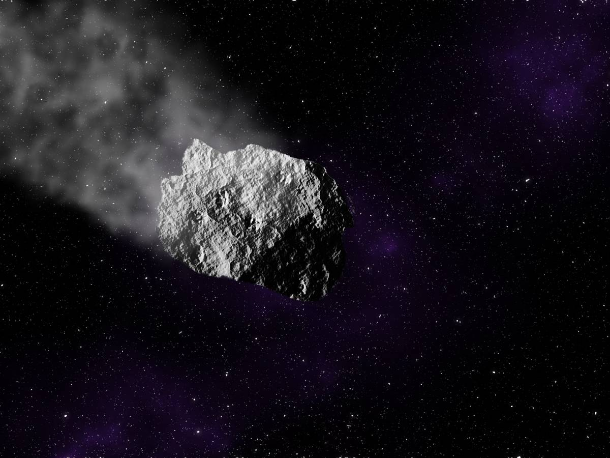
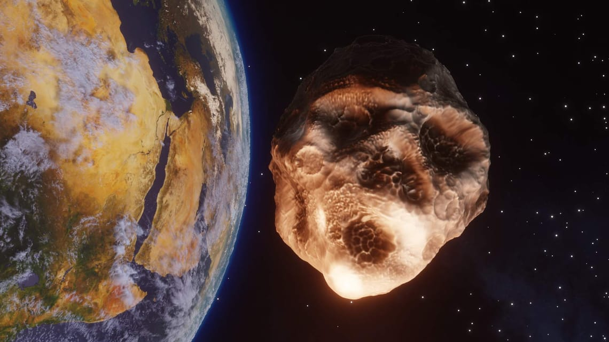
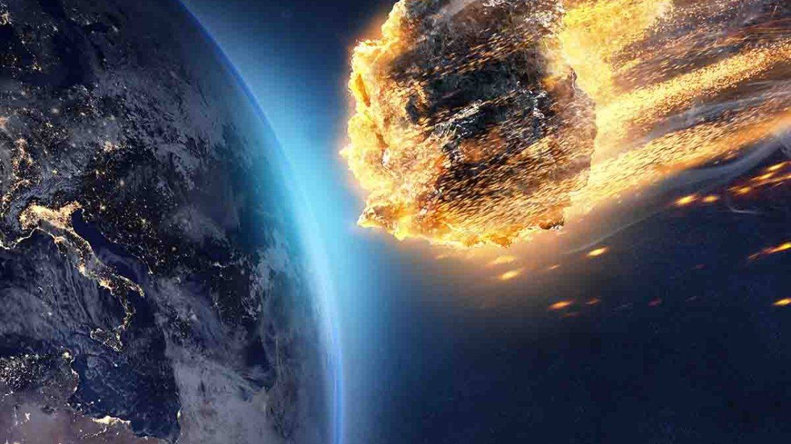
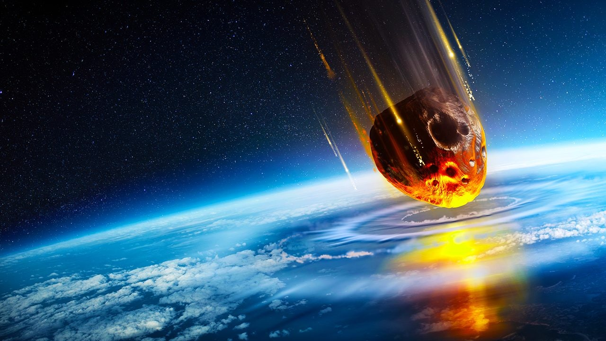

Il meteorite è ciò che rimane dopo l'ablazione atmosferica
di un meteoroide (cioè "piccolo" asteroide) entrato in collisione con
la Terra, ovvero in pratica ciò che di esso raggiunge
il suolo: quando entrano nell'atmosfera i meteoroidi si riscaldano
fino ad emettere luce, formando così una scia luminosa chiamata meteora
(detta anche stella cadente) o bolide; il riscaldamento non è
prodotto dall'attrito, ma dalla pressione dinamica generata dalla fortissima
compressione dell'aria di fronte al meteorite; l'aria si riscalda
e a sua volta riscalda l'oggetto.Più precisamente per meteorite
si intende un corpo di natura non artificiale ed extraterrestre,
di conseguenza detriti spaziali precipitati o tectiti non sono meteoriti.
|  |  |  |  |